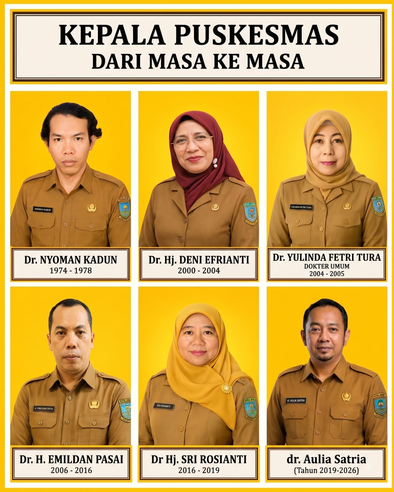
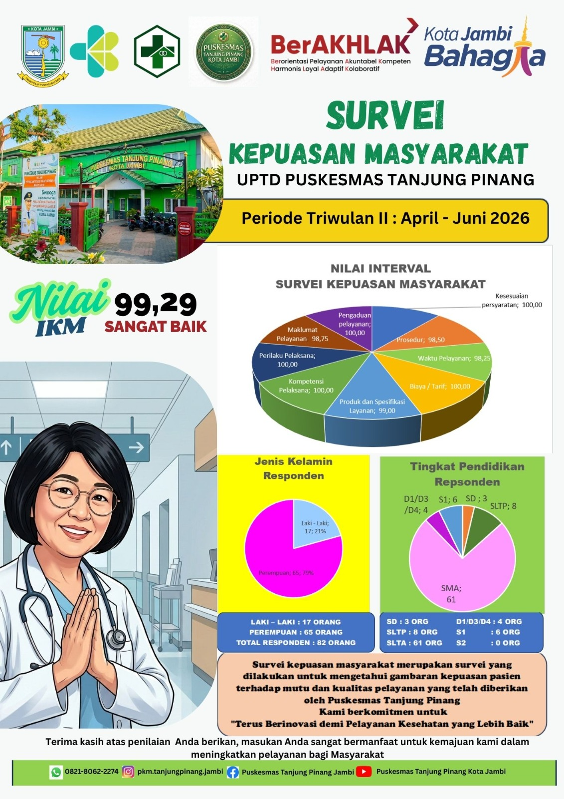
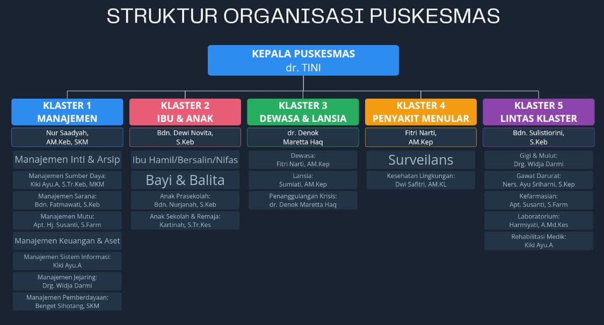

Sejarah UPTD Puskesmas Tanjung Pinang
Puskesmas Tanjung Pinang Kota Jambi berdiri pada tahun 1974 dengan nama Puskesmas Inpres 5/74. Dalam perkembangannya, Puskesmas Tanjung Pinang menjadi salah satu fasilitas pelayanan kesehatan tingkat pertama di Kecamatan Jambi Timur dengan wilayah kerja yang luas dan jumlah penduduk yang besar.
Sumber: Profil UPTD Puskesmas Tanjung Pinang Kota Jambi Tahun 2025.
Kepala Puskesmas dari Masa ke Masa
Jejak kepemimpinan UPTD Puskesmas Tanjung Pinang sejak awal berdiri hingga sekarang.

🔍 Klik untuk perbesarSumber: Dokumentasi UPTD Puskesmas Tanjung Pinang Kota Jambi.
Visi & Misi
“Mewujudkan Pelayanan Kesehatan Primer yang Berkualitas, Inovatif, dan Merata Menuju Masyarakat yang Sehat dan Bahagia tahun 2029.”
Misi
Sumber: Profil UPTD Puskesmas Tanjung Pinang Kota Jambi Tahun 2025.
Motto & Tata Nilai
Tata Nilai “BerAKHLAK”
Tata nilai ASN BerAKHLAK diterapkan sesuai Surat Edaran Menteri PANRB Nomor 20 Tahun 2021 tentang Implementasi Core Values dan Employer Branding Aparatur Sipil Negara, dengan employer branding “Bangga Melayani Bangsa”.
Berorientasi Pelayanan
- Memahami dan memenuhi kebutuhan masyarakat.
- Ramah, cekatan, solutif, dan dapat diandalkan.
- Melakukan perbaikan tiada henti.
Akuntabel
- Melaksanakan tugas dengan jujur, bertanggung jawab, cermat, disiplin, dan berintegritas tinggi.
- Menggunakan kekayaan dan barang milik negara secara bertanggung jawab, efektif, dan efisien.
- Tidak menyalahgunakan kewenangan jabatan.
Kompeten
- Meningkatkan kompetensi diri untuk menjawab tantangan yang selalu berubah.
- Membantu orang lain belajar.
- Melaksanakan tugas dengan kualitas terbaik.
Harmonis
- Menghargai setiap orang apapun latar belakangnya.
- Suka menolong orang lain.
- Membangun lingkungan kerja yang kondusif.
Loyal
- Memegang teguh ideologi Pancasila, UUD NRI 1945, NKRI, serta pemerintahan yang sah.
- Menjaga nama baik sesama ASN, pimpinan, instansi, dan negara.
- Menjaga rahasia jabatan dan negara.
Adaptif
- Cepat menyesuaikan diri menghadapi perubahan.
- Terus berinovasi dan mengembangkan kreativitas.
- Bertindak proaktif.
Kolaboratif
- Memberi kesempatan kepada berbagai pihak untuk berkontribusi.
- Terbuka dalam bekerja sama untuk menghasilkan nilai tambah.
- Menggerakkan pemanfaatan berbagai sumber daya untuk tujuan bersama.
Makna 5S menurut Profil Puskesmas
- Senyum: menciptakan rasa tenang dan tenteram serta menularkan energi positif.
- Sapa: bentuk penghargaan kepada orang lain dan mempererat hubungan.
- Salam: perilaku positif untuk menjaga rasa saling terhubung.
- Sopan: membudayakan perilaku menghormati dan menghargai orang lain.
- Santun: menunjukkan pribadi yang menyenangkan.
Logo Salam Harmoni
- Lingkaran (jempol & telunjuk): melambangkan persatuan, keutuhan, dan kebersamaan — sekaligus berarti "OK"/setuju, menunjukkan keramahan dan keterbukaan.
- Tiga jari di dada: melambangkan hati nurani, ketulusan, dan kesungguhan dalam menyapa, serta tiga nilai penting: kejujuran, hormat, dan kasih sayang.
- Makna keseluruhan: salam yang tulus, penuh persahabatan, berdasarkan niat baik dari hati, sebagai wujud kesiapan menjalin hubungan yang harmonis dan saling menghormati.
Sumber: Materi Rapat Visi-Misi, Motto dan Tata Nilai UPTD Puskesmas Tanjung Pinang Tahun 2026.
🏥 Klaster 1 — Manajemen
Bagian ini mencakup ketatausahaan, sumber daya, manajemen Puskesmas, mutu dan keselamatan pasien, jejaring, pemberdayaan masyarakat, struktur organisasi, wilayah kerja, Pustu, komitmen pelayanan, IKM, serta prestasi dan capaian Puskesmas.

Hasil Survei Kepuasan Masyarakat Triwulan II 2026 (April-Juni): Nilai IKM 99,29 - Sangat Baik. Klik poster untuk melihat lebih besar.
Ketatausahaan
Ketatausahaan mendukung penyelenggaraan administrasi Puskesmas, termasuk kepegawaian, arsip, keuangan, aset, dan sistem informasi, serta mendukung koordinasi penyelenggaraan manajemen Puskesmas.
Manajemen Inti Puskesmas
Nur Saadyah, AM.Keb, SKM
Koordinasi manajemen inti dan penyelenggaraan manajemen Puskesmas.
Manajemen Arsip
Nur Saadyah, AM.Keb, SKM
Pengelolaan arsip dan administrasi dokumentasi Puskesmas.
Manajemen Keuangan & Aset/BMD
Nur Saadyah, AM.Keb, SKM
Pengelolaan keuangan serta aset atau Barang Milik Daerah.
Manajemen Sistem Informasi Digital
Kiki Ayu.A, S.Tr.Keb, MKM
Pengelolaan data, pencatatan, pelaporan, dan sistem informasi kesehatan.
Manajemen Sumber Daya
Manajemen sumber daya mencakup pengelolaan sumber daya manusia serta sarana, prasarana, obat, dan bahan medis habis pakai untuk mendukung pelayanan Puskesmas.
Manajemen Sumber Daya
PJ: Kiki Ayu.A, S.Tr.Keb, MKM
Pengelolaan dan pengembangan sumber daya manusia sesuai kebutuhan penyelenggaraan pelayanan.
Sarana, Prasarana & Perbekalan Kesehatan
PJ: Bdn. Fatmawati, S.Keb
Pengelolaan sarana, prasarana, obat, dan perbekalan kesehatan termasuk BMHP.
Manajemen Puskesmas
Manajemen Puskesmas mengoordinasikan perencanaan, pelaksanaan, pemantauan, evaluasi, manajemen program/klaster, dan pemberdayaan masyarakat dalam penyelenggaraan pelayanan kesehatan primer.
Manajemen Inti Puskesmas
PJ: Nur Saadyah, AM.Keb, SKM
Mengoordinasikan pelaksanaan manajemen Puskesmas dan mendukung keterpaduan antar-klaster.
Manajemen Program / Klaster
Koordinasi pelaksanaan program dan klaster sesuai pembagian tugas Puskesmas.
Manajemen Pemberdayaan Masyarakat
PJ: Benget Sihotang, SKM
Mendukung keterlibatan dan pemberdayaan masyarakat dalam pembangunan kesehatan.
Manajemen Mutu & Keselamatan Pasien
Manajemen mutu dan keselamatan pasien menjaga agar pelayanan Puskesmas berjalan sesuai standar, aman, berorientasi pada masyarakat, dan terus mengalami perbaikan.
Manajemen Mutu
PJ: Apt. Hj. Susanti, S.Farm
Mengoordinasikan pengelolaan mutu pelayanan dan perbaikan berkelanjutan.
Komitmen Pelayanan
Komitmen pelayanan Puskesmas dan Maklumat Pelayanan menjadi bagian dari penguatan mutu serta akuntabilitas pelayanan.
Lihat Komitmen & Maklumat →Inovasi
Inovasi pelayanan dikembangkan sebagai bagian dari peningkatan mutu, respons terhadap kebutuhan masyarakat, dan penguatan pelayanan primer yang inovatif dan terintegrasi.
Prestasi & Penghargaan
Dokumentasi capaian dan penghargaan Puskesmas ditempatkan sebagai bagian dari rekam jejak mutu dan pengembangan pelayanan.
Lihat Prestasi & Penghargaan →Manajemen Jejaring Puskesmas
Manajemen jejaring membina hubungan kerja sama dan keterhubungan Puskesmas dengan jejaring fasilitas kesehatan serta unsur pelayanan kesehatan di wilayah kerja.
Manajemen Jejaring
PJ: drg. Widja Darmi
Mengoordinasikan hubungan dan jejaring pelayanan kesehatan dalam wilayah kerja Puskesmas.
Wilayah Kerja & Pustu
Wilayah kerja dan Puskesmas Pembantu merupakan bagian dari jaringan pelayanan Puskesmas.
Lihat Wilayah & Pustu →Struktur Organisasi
Struktur organisasi UPTD Puskesmas Tanjung Pinang disusun dalam sistem klaster sesuai Integrasi Layanan Primer (ILP), mengacu pada Peraturan Menteri Kesehatan Nomor 19 Tahun 2024 tentang Penyelenggaraan Pusat Kesehatan Masyarakat.

🔍 Klik untuk perbesardr. Tini
Manajemen
- Manajemen Inti Puskesmas Nur Saadyah, AM.Keb, SKM
- Manajemen Arsip Nur Saadyah, AM.Keb, SKM
- Manajemen Sumber Daya Kiki Ayu.A, S.Tr.Keb, MKM
- Manajemen Sarana, Prasarana, dan Perbekalan Kesehatan Bdn. Fatmawati, S.Keb
- Manajemen Mutu Apt. Hj. Susanti, S.Farm
- Manajemen Keuangan dan Aset atau Barang Milik Daerah Nur Saadyah, AM.Keb, SKM
- Manajemen Sistem Informasi Digital Kiki Ayu.A, S.Tr.Keb, MKM
- Manajemen Jejaring drg. Widja Darmi
- Manajemen Pemberdayaan Masyarakat Benget Sihotang, SKM
Ibu dan Anak
- Ibu Hamil, Bersalin, dan Nifas Bdn. Dewi Novita, S.Keb
- Bayi dan Anak Balita Bdn. Dewi Novita, S.Keb
- Anak Pra Sekolah Bdn. Nurjanah, S.Keb
- Anak Usia Sekolah dan Remaja Kartinah, S.Tr.Kes
Usia Dewasa dan Lansia
- Dewasa Fitri Narti, AM.Kep
- Lanjut Usia Sumiati, AM.Kep
Penanggulangan Penyakit Menular
- PJ Kesehatan Lingkungan Dwi Safitri, AM.KL
- Surveilans Fitri Narti, AM.Kep
Lintas Klaster
- Pelayanan Kesehatan Gigi & Mulut drg. Widja Darmi
- Pelayanan Gawat Darurat Ners. Ayu Sriharni, S.Kep
- Pelayanan Kefarmasian Apt. Susanti, S.Farm
- Pelayanan Laboratorium Kesmas Harmiyati, A.Md.Kes
- Penanggulangan Krisis Kesehatan dr. Denok Maretta Haq
- Pelayanan Rehabilitasi Medik Dasar Kiki Ayu.A, S.Tr.Keb, MKM
*Berdasarkan Peraturan Menteri Kesehatan Nomor 19 Tahun 2024. Sumber: Profil UPTD Puskesmas Tanjung Pinang Kota Jambi Tahun 2025.
Wilayah Kerja & Puskesmas Pembantu
Wilayah kerja UPTD Puskesmas Tanjung Pinang mencakup 5 kelurahan di Kecamatan Jambi Timur:
Jaringan Puskesmas Pembantu
Bagian dari jaringan pelayanan UPTD Puskesmas Tanjung Pinang.
Bagian dari jaringan pelayanan UPTD Puskesmas Tanjung Pinang.
Bagian dari jaringan pelayanan UPTD Puskesmas Tanjung Pinang.
Batas wilayah: Utara Sungai Batanghari; Selatan Kelurahan Talang Banjar; Barat Kelurahan Pasar Jambi; Timur Kelurahan Tanjung Sari. Sumber: Profil UPTD Puskesmas Tanjung Pinang Kota Jambi Tahun 2025.
Maklumat & Komitmen Pelayanan
Pernyataan resmi kesiapan UPTD Puskesmas Tanjung Pinang dalam memberikan pelayanan sesuai standar, termasuk kesiapan menerima sanksi atau memberikan kompensasi apabila pelayanan tidak sesuai standar yang ditetapkan.
 🔍 Klik untuk perbesar
🔍 Klik untuk perbesar
Dasar konten layanan: SK Kepala UPTD Puskesmas Tanjung Pinang Nomor 39 Tahun 2026 tentang Standar Pelayanan Publik, ditetapkan 15 Maret 2026.
Pelayanan dipertanggungjawabkan sesuai Standar Pelayanan.
Email, call center, WhatsApp, Instagram, Facebook, kotak saran, dan SPAN-LAPOR.
Monitoring dan evaluasi dilakukan melalui mekanisme yang ditetapkan dalam standar pelayanan.
Survei Kepuasan Masyarakat (IKM)
Hasil evaluasi rutin terhadap mutu dan kualitas pelayanan berdasarkan penilaian langsung dari masyarakat yang dilayani.
Triwulan II 2026 (April-Juni) — Nilai IKM 99,29 (Sangat Baik)
Triwulan I 2026 (Januari-Maret) — Nilai IKM 98,54 (Sangat Baik)
 🔍 Klik untuk perbesar
🔍 Klik untuk perbesar
Prestasi & Penghargaan
Beberapa prestasi dan capaian yang telah diraih UPTD Puskesmas Tanjung Pinang.
Inovasi Pelayanan Publik Terbaik 5 Kota Jambi
Penghargaan inovasi pelayanan publik tingkat Kota Jambi.
Pemenang Lomba Inovasi Daerah
Inovasi Genre_seh — Pemenang Lomba Inovasi Daerah Tahun 2025.
Puskesmas Rujukan Ramah Anak Provinsi Jambi
Menjadi Puskesmas Rujukan Ramah Anak di Provinsi Jambi sejak Tahun 2024.
Puskesmas Ramah Anak Terstandar Nasional
Pengakuan sebagai Puskesmas Ramah Anak Terstandar Nasional Tahun 2024.
Puskesmas Lokus KKS Kota Jambi Sehat
Puskesmas Lokus KKS Kota Jambi Sehat Tahun 2023.
Akreditasi PARIPURNA II
Puskesmas Terakreditasi PARIPURNA ke II pada Tahun 2023.
Inovasi Promosi Kesehatan — “LAGU SADARI”
Penghargaan inovatif promosi kesehatan pencegahan kanker payudara dan kanker leher rahim sebagai pencipta “LAGU SADARI”.
Dokter Teladan I Tingkat Provinsi Jambi
Dokter Teladan I Tingkat Provinsi Jambi Tahun 2020.
Akreditasi PARIPURNA I
Puskesmas Terakreditasi PARIPURNA I pada Tahun 2019.
Daftar capaian disusun berdasarkan informasi prestasi Puskesmas yang diberikan untuk pembaruan profil website.
Sumber utama Klaster 1: Profil UPTD Puskesmas Tanjung Pinang Kota Jambi Tahun 2025, dokumen pelayanan tahun 2026, serta materi internal yang digunakan dalam pembaruan profil website.
Karakteristik & Kekuatan Wilayah
Bagian ini menonjolkan ciri khas berdasarkan data profil resmi, bukan membuat klaim penghargaan baru.
Data Jaringan Posyandu Aktif
Berikut adalah rincian data jadwal, alamat, dan petugas penanggung jawab Posyandu di wilayah kerja Puskesmas:
| No | Kelurahan | Posyandu | Tanggal | Jam (WIB) | Alamat (RT) | Nama Petugas | Wilayah Kerja |
|---|---|---|---|---|---|---|---|
| 1 | Tanjung Pinang | Merpati I | 19 | 15.00 | 28 | Mawar Agustin | 28,30 |
| 2 | Tanjung Pinang | Merpati II | 19 | 15.00 | 23 | Sulistiorini | 12,13,23,26 |
| 3 | Tanjung Pinang | Merpati III | 20 | 15.00 | 16 | Sumiati | 14,15,16,17 |
| 4 | Tanjung Pinang | Merpati IV | 20 | 15.00 | 7 | Fatmawati | 06,07,08 |
| 5 | Tanjung Pinang | Merpati V | 11 | 10.00 | 22 | Fitri Nila Sari | 20,21,22 |
| 6 | Tanjung Pinang | Merpati VI | 10 | 10.00 | 32 | Dewi Novita | 31,32 |
| 7 | Tanjung Pinang | Merpati VII | 15 | 10.00 | 10 | Ayu Sriharni | 09,10,11 |
| 8 | Tanjung Pinang | Merpati VIII | 18 | 10.00 | 5 | Lieska Wulandari | 04,05 |
| 9 | Tanjung Pinang | Merpati IX | 12 | 10.00 | 27 | Dwi Safitri | 27 |
| 10 | Tanjung Pinang | Merpati X | 13 | 10.00 | 19 | Eka Sari | 18,19 |
| 11 | Tanjung Pinang | Merpati XI | 6 | 15.00 | 2 | Hambali | 01,02,03 |
| 12 | Tanjung Pinang | Merpati XII | 13 | 10.00 | 24 | Benget Sihotang | 24,25 |
| 13 | Tanjung Pinang | Merpati XIII | 16 | 15.00 | 33 | Harmiyati | 29,33 |
| 14 | Kasang | Nuri I | 11 | 10.00 | 10 | Ani Marlina | 9,10 |
| 15 | Kasang | Nuri II | 5 | 10.00 | 12 | Desti Wulandari Putri | 12,13 |
| 16 | Kasang | Nuri III | 10 | 15.00 | 3 | Nurfitriani | 3 |
| 17 | Kasang | Nuri IV | 9 | 10.00 | 7 | Dwi Safitri | 7 |
| 18 | Kasang | Nuri V | 15 | 10.00 | 8 | Lieska Wulandari | 6,8 |
| 19 | Kasang | Nuri VI | 20 | 10.00 | 2 | Rischa | 1,2 |
| 20 | Kasang | Nuri VII | 19 | 10.00 | 11 | Kiki Ayu Apriani | 5,11 |
| 21 | Kasang | Nuri VIII | 11 | 10.00 | 4 | Susanti Mukhtar | 4 |
| 22 | Rajawali | Melati I | 5 | 10.00 | 21 | Roy Sri Veronika | 20,21 |
| 23 | Rajawali | Melati II | 8 | 10.00 | 2 | Rozalti | 1,2,3,4,5,6,7,8 |
| 24 | Rajawali | Melati IV | 7 | 15.00 | 19 | Fenny Yulanda | 14,15,19 |
| 25 | Rajawali | Melati VI | 5 | 10.00 | 23 | Fitri Narti | 22,23,24 |
| 26 | Rajawali | Melati VII | 5 | 10.00 | 10 | Rischa Noviza | 9,10,11 |
| 27 | Rajawali | Melati VIII | 12 | 10.00 | 13 | Susanti | 12,13 |
| 28 | Rajawali | Melati IX | 12 | 10.00 | 18 | Sri Handayani | 16,17,18,25 |
| 29 | Kasang Jaya | Cenderawasih I | 11 | 15.00 | 2 | Mawar Agustin | 1, 2, 3 |
| 30 | Kasang Jaya | Cenderawasih II | 7 | 09.00 | 5 | Dini Rika Miranti | 4, 5, 15 |
| 31 | Kasang Jaya | Cenderawasih III | 16 | 10.00 | 8 | Nurjanah | 8 |
| 32 | Kasang Jaya | Cenderawasih IV | 9 | 15.00 | 9 | Nurbaiti | 9 |
| 33 | Kasang Jaya | Cenderawasih V | 6 | 10.00 | 14 | Nurpika Safitri | 10, 14 |
| 34 | Kasang Jaya | Cenderawasih VI | 10 | 10.00 | 11 | Nurpika Safitri | 11, 12 |
| 35 | Kasang Jaya | Cenderawasih VII | 5 | 10.00 | 13 | Tri Minjuwinata | 13 |
| 36 | Kasang Jaya | Cenderawasih VIII | 5 | 10.00 | 7 | Ani Marlina | 6, 7 |
| 37 | Sijenjang | Serindit I | 15 | 10.00 | 8 | Hj. Maria | 7, 8 |
| 38 | Sijenjang | Serindit II | 10 | 10.00 | 2 | Hj. Maria | 1, 2 |
| 39 | Sijenjang | Serindit III | 15 | 09.00 | 3 | Ni Ketut Martini | 3, 4 |
| 40 | Sijenjang | Serindit IV | 8 | 10.00 | 10 | Kartinah | 6, 10 |
| 41 | Sijenjang | Serindit V | 16 | 10.00 | 5 | Tri Minjuwinata | 5, 9 |
🤝 Dekat dengan masyarakat
Pelayanan tidak hanya berlangsung di gedung Puskesmas. Profil 2025 mencatat dukungan UKBM melalui Posyandu dan jaringan Pustu, sehingga pelayanan dapat menjangkau masyarakat di wilayah kerja.
💡 Semangat inovasi
Semangat inovasi tercermin secara resmi dalam visi dan tata nilai SEHATI, khususnya nilai INOVATIF, serta arah pelayanan primer yang inovatif dan terintegrasi.
❤️ Identitas pelayanan: 5S
Senyum, Sapa, Salam, Sopan, Santun menjadi budaya komunikasi pelayanan yang mudah dikenali dan dekat dengan masyarakat.
Data karakteristik: Profil UPTD Puskesmas Tanjung Pinang Kota Jambi Tahun 2025 dan SK Standar Pelayanan 2026.